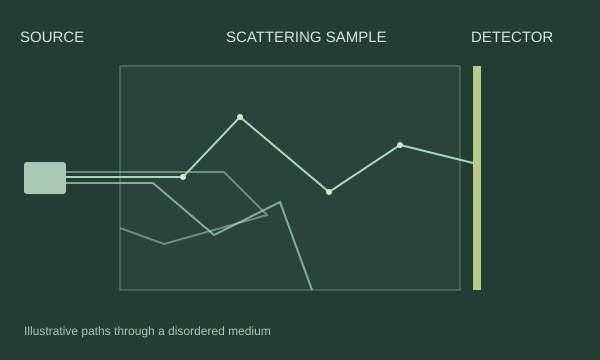

What this model shows
Rays travel in straight lines and reflect when they hit the visible circular particles. A small flash marks each collision. Counts show where rays leave the sample. This geometric model illustrates scattering; it does not simulate wave interference, optical gain, or a real particle’s scattering response. The dimensions and timing are illustrative.
Random lasing in
biological media.
I investigate random lasing and optical emission in biological scattering media at Florida Polytechnic University, including seashell-derived particles in Rhodamine B–glycerol.
My contribution Sample preparation, pulsed-laser experiments, and Python workflows for peak fitting, linewidth analysis, and spectral comparisons. I also connect spectrometers, energy meters, motorized stages, and Arduino controls for automated measurements.
Related research output